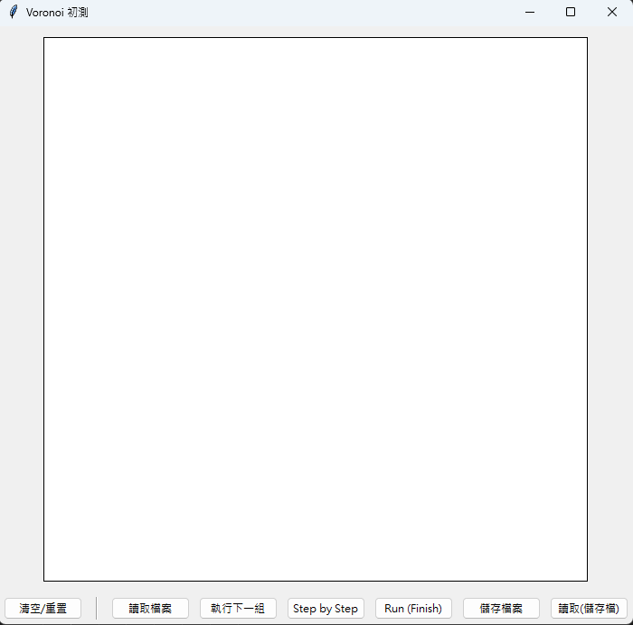
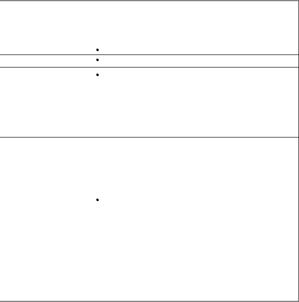
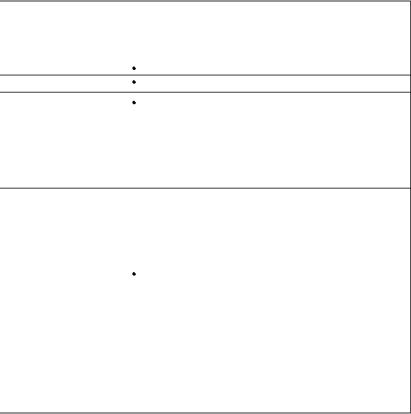

平面 Voronoi Diagram 之分治法實作成果報告
I. 軟體規格書與軟體說明
1.1 輸入與輸出規格
本程式主要處理平面點集資料。輸入可以分為三種來源：
-
互動輸入：
滑鼠在畫布上任意點擊，畫布大小為600x600，點擊後可使用 Run (Finish) 或是 step by step 執行。 -
點資料輸入檔：
文字檔，第一行為n表示接下來有n個x、y輸入座標， 直到讀到0表示輸入結束。
參考檔案: 📄 下載此範例檔 (input.txt) -
"輸出(存檔)"資料輸入檔：
參考: 📄 下載此範例檔 (save_input.txt)
輸出部分同樣以文字檔或畫面顯示為主：
-
邊資料輸出檔：
文字檔，每一行為一條 Voronoi 邊，格式為：
E x1 y1 x2 y2，分別代表邊的兩個端點座標。 - 畫面顯示： 程式會在視窗中顯示原始點集與對應的 Voronoi Diagram。
-
輸出文字檔案範例：
以下是 APP 生成的實際檔案內容範例（可以直接複製或連結下載並儲存為
.txt進行測試）：P 103 200Link: 📄 下載此範例檔 (save_input.txt)
P 193 64
P 193 370
P 283 200
E 0 34 193 161
E 0 363 193 261
E 193 161 193 261
E 193 161 437 0
E 193 261 600 476
1.2 功能規格與介面規格
主要提供的功能如下：
- 讀入一組平面點資料，建構對應的 Voronoi 圖。
- 可將建構完成的 Voronoi 邊輸出為文字檔，方便後續分析或比對。
- 提供簡單的視覺化介面，顯示點與 Voronoi 邊的關係。
- 支援 step-by-step 模式，顯示分治與合併的中間狀態。
介面部分如下：

-
執行方式：
由命令列執行，例如：python M143040012_main.py input.txt， 或是直接執行 M143040012_VoronoiDiagram.exe。 -
視窗操作：
點擊畫布會產生 point，可以點擊 "Run (Finish)" 或是 "step by step" 執行。
每次載入測試檔案需要點擊 「執行下一組」 才會在畫布上畫出 point，這時候可以執行 (Run 或 step by step)。
"儲存檔案" 前需要點 "Run (Finish)" 才可以進行存檔。
讀取檔案分成 "讀取檔案" 和 "讀取(儲存檔)"，兩者不能混合使用。
1.3 軟體測試規劃書
測試大致分成幾類：
- 少量點測試（1–3 點）：檢查 base case 與基本拓樸是否正確。
- 中等數量點（例如 10–50 點）：觀察整體 Voronoi 圖的形狀與分治合併行為。
- 大量隨機點：產生多組隨機點集，比對結果是否穩定。
- 特殊情況測試：例如點接近共線、或是可能導致上下切線錯誤的測資，以觀察數值穩定性。
各類測試的實際輸入與輸出範例，會整理在後面的 「VI. 軟體測試與實驗結果」與「附錄」中。
1.4 安裝與使用說明
執行方式：
- 直接執行 M143040012_VoronoiDiagram.exe 即可
python 檔案使用方式 (執行原始檔)：
- 執行環境： 需要安裝（Python 3.10.18），以及以下套件： （ pandas, tkinter, numpy 等）。
-
編譯／執行方式：
在專案目錄下執行：
python M143040012_main.py。
II. 專案說明與問題定義
在這份專題中，我實作了一個能建構平面點集 S 的 Voronoi Diagram 程式。 演算法核心採用分治法（Divide and Conquer, D&C），理論上的時間複雜度為 O(n log n)。實作的重點不是只把圖畫出來，而是要有一個拓樸關係正確、 之後可以再利用的資料結構，並且搭配簡單的視覺化方便觀察結果。
主要設計目標
- 拓樸核心： 以 Winged-Edge 資料結構實作 Voronoi 圖，完整紀錄邊與面之間的鄰接關係。
- 無限邊界處理： 計算一個相對較大的值當作無限遠的點處理無限延伸的邊界， 讓分治合併可以在「理想的無限平面」上進行，而不是一開始就被畫布裁切，因為有些情況交點會在畫布外。
- 高效合併： 在合併階段達成接近 O(n) 的時間複雜度，正確處理線段交點、裁剪以及縫合等操作， 讓整體實作比較貼近教科書上的 D&C 推導。
III. 資料結構與幾何表示
Winged-Edge 是整個實作的基礎，用來以陣列形式儲存 Voronoi 圖的拓樸鄰接資訊。 相較於直接存線段集合，這種做法在合併、刪改邊時比較有系統，也比較不容易出錯。
3.1 拓樸核心與陣列結構
主要包含 8 個核心邊陣列（例如 cw_predecessor、ccw_successor 等），
以及 2 個查找陣列（edge_around_vertex、edge_around_polygon）用來快速存取
頂點與多邊形周圍的邊。
點–區域對應：
額外設計 site_of_polygon 陣列，將多邊形 ID 映射回其對應的生成點索引。
這個對應關係在 merge_voronoi 重新計算垂直平分線位置時會被反覆使用，
是合併步驟中很重要的一個橋樑。
3.2 無限邊界與齊次座標（w=0）
為了讓分治合併步驟能在無限平面上進行，而不是一開始就被某個矩形畫布限制， 實作中採用齊次座標的簡化表示：
- 普通頂點（w=1）：直接儲存實際畫布／笛卡爾座標 (x, y)。
-
無限遠點（w=0）：
一樣儲存實際畫布／笛卡爾座標 (x, y)，只是之後計算會根據
w來判斷碰撞。
class WingedEdge:
"""
索引：
- 邊 (Edge) 相關列表使用 'k' 作為索引。
- 頂點 (Vertex) 相關列表使用 'j' 作為索引。
- 多邊形 (Polygon) 相關列表使用 'i' 作為索引。
"""
def __init__(self):
# --- 8 個 "邊" 陣列 (indexed by k) ---
self.left_polygon = []
self.right_polygon = []
self.start_vertex = []
self.end_vertex = []
self.cw_predecessor = []
self.ccw_predecessor = []
self.cw_successor = []
self.ccw_successor = []
# --- 2 個 "查找" 陣列 ---
self.edge_around_polygon = [] # (indexed by i) 多邊形 i 邊界上的任意一條邊 k
self.edge_around_vertex = [] # (indexed by j) 與頂點 j 相鄰的任意一條邊 k
# --- 3 個 "頂點" 陣列 (indexed by j) ---
self.w_vertex = [] # 1 = 普通點, 0 = 無限遠點
self.x_vertex = [] # x 座標
self.y_vertex = [] # y 座標
self.site_of_polygon = [] # polygon i 對應哪一個 site index
IV. 演算法流程與合併邏輯
4.1 基本情況（Base Cases）
遞迴在 n ≤ 3 時停止。這些基本情況主要用來建立拓樸一致的無限 Voronoi 圖， 讓上層的合併步驟有一個乾淨的起點。
-
n = 3 拓樸：
使用math.atan2對三個點做角度排序， 確保所有邊的cw/ccw連結皆遵循一致的逆時針（CCW）順序。 同時為了要判斷這邊邊的左多邊形和右多邊形代表的點我使用外積來判斷left_p、right_p的位置， 這樣之後合併時候需要藉由pid(polygon id)從self.site_of_polygon得到的座標才會正確。 -
幾何表示：
射線的起點為 w=1 的外心座標，終點為 w=0 的無線遠點。
4.2 合併邏輯（Merge Logic）
merge_voronoi 函數實作了主要的合併步驟，大致流程如下：
-
尋找上下切線（Tangents）：
先呼叫upper_tangent與lower_tangent， 以 O(n) 的行走法在左右兩側凸包上找出上、下公切線。 這兩條切線決定了分界鏈的起點與終點，也是之後追蹤的邊界。 -
Hyperplane 尋找：
合併時會從上切線所對應的垂直平分線開始，呼叫get_first_collision找出 左右兩側 Voronoi Diagram 最先被撞到的邊，並比較哪一側的碰撞距離較近，以決定下一段分界線應由哪兩個點（lp、rp）的中垂線所構成。 這個過程可以想像成沿著「左右兩張 Voronoi 圖的交界」一路往下行走。
每次撞到某條邊 k 之後，需要判斷下一段分界線的方向。由於 k 必定是由 lp 或 rp 其中之一與另一個點所形成的中垂線，因此如果碰撞發生在左側 Voronoi， 就將 lp 更新為與 k 相關的另一個點；若碰撞在右側，則以同樣方式更新 rp。 這樣做可以保證新的點組合與未被替換的點在碰撞位置具有共同外心，使得後續的中垂線方向一致， 並能讓分界鏈正確地向下一步延伸。 -
拓樸更新與縫合：
在每個交點處，由update_edge_topology負責更新 所有受影響的cw/ccw指標，將新邊縫合到原有的 Winged-Edge 結構中。 這部分最容易出現「指標接錯」導致畫面整個扭曲，所以程式裡有特別一個輸出資料結構的函式來輔助檢查。 -
修剪與清理：
透過clip_edge替換舊邊端點，並呼叫remove_disconnected_components移除合併後不再連通的幽靈邊， 完成整體接近 O(n) 的合併操作。
其中，clip_edge是判斷碰撞邊 k 與 lp、rp 的距離，如果碰撞的是左邊 Voronoi，那麼碰撞邊兩端相對於 lp 更靠近 rp 的刪除， 另一邊也是相同的算法。remove_disconnected_components則是利用之前維護的cw/ccw關係刪去已經沒有相連的邊。
V. 程式設計規範與測試細節
5.1 測試流程
-
逐步追蹤（Step-by-step）：
程式中設計
self.history機制，記錄分治遞迴過程中的關鍵快照 （例如left_hull、seam_edges等）。 透過on_step_click可以逐步瀏覽這些狀態，對於觀察演算法流程和 debug 都滿實用的。
5.2 凸包維護（Convex Hull Maintenance）
為了維持分治演算法的效率，不在每一層遞迴重複執行 O(n log n) 的凸包計算， 而是直接從 Voronoi 圖中恢復凸包資訊：
-
邊界掃描：
hull_site_indices_from_voronoi會掃描所有連到 w = 0 頂點的邊，直接找出位於 Convex Hull 上的點索引。 -
Hull 排序：
convex_hull_from_voronoi使用atan2進行角度排序， 回傳逆時針（CCW）順序的點列表，提供公切線計算使用。 -
合併時更新 Convex Hull：
雖然
convex_hull_from_voronoi只針對凸包上的點做排序，成本不算太高， 但多做幾次還是有優化空間。因此這個函式我只在 base case 階段執行； 在 merge 的時候，則改成沿著邊界走一圈：從左側 Voronoi 的下切線出發，到上切線， 再接到右側 Voronoi 的上切線，最後回到下切線。這條路徑上經過的點，就會形成新的全域 convex hull， 省掉在每次合併後重新跑一次凸包演算法的成本。
VI. 測試結果與已知限制
6.1 測試環境
本專題之程式主要在以下環境下測試：
- CPU：11th Gen Intel(R) Core(TM) i5-1135G7 @ 2.40GHz(2.42Ghz)
- 記憶體：24GB
- 作業系統：Windows 11 家用版 24H2
- 開發與執行環境：Python 3.10.18
6.2 實驗結果
為了確認實作是否符合預期，我用幾種不同類型的點集來測試：
 

6.4 已知限制
- 在數值範圍非常大的座標（例如數萬以上）下，浮點誤差的影響會變得比較明顯。
- 目前的實作主要針對一般情況，對於刻意設計的特別測資（如大量整齊的點）尚未完全最佳化，若是同個點有超過三個邊的情況程式會無法正確運作，即使正確也大概率是碰巧。
VII. 實作心得與後續可能改進
7.1 實作過程中的學習
一開始在看教科書上的分治法 Voronoi 圖建構時，對「只畫出分界鏈」這個想法有點抽象。 實際實作 Winged-Edge 之後，才比較能體會為什麼需要這麼完整的拓樸結構， 而不只是存一堆線段。尤其在合併階段要「縫合」左右兩側圖的時候， 如果拓樸資訊不夠清楚，程式很容易改到後面就改不下去。
另一個感覺比較深的是浮點數相關的問題。理論上垂直平分線、外心的位置都寫得很乾淨， 但實際上只要點的配置稍微極端一點，數值誤差就會放大， 最後在畫面上看到的就是「邊沒有交在同一個點」之類的怪現象。
最麻煩的部分當然就是合併的部分，寫完 base case 後我還想說只剩下最後一個部分就可以完成了，但沒想到這邊也是最困難的部分， 從找上下切線時候遇到共線會錯誤到碰撞的線消除了但是懸浮很多線道維護複雜的資料結構都花了我相當長的時間。
7.2 可能的改進方向
- 更完整的錯誤處理： 目前主要是用 vscode 來進行 step-by-step 和 輸出資料結構來判斷錯誤位置。 未來可以把錯誤情況記錄下來，整理成更系統化的 debug 工具。
- 互動式視覺化： 目前的視覺化已能基本顯示結果，但如果有時間，可以增加滑鼠拖曳點、即時更新 Voronoi 圖等功能， 會更直覺地展示分治法的效果。
- 更完整的事前規劃： 這次實作上碰到許多困難導致我需要頻繁的往前改動寫好的程式碼，我認為很大一部份是因為我是邊做邊學習算法而不是先了解了算法再進行實作， 下次如果有類似的專題，我認為我可以先進行一些規劃，這樣可以減少時間的浪費。
整體來說，這次實作讓我對「幾何 + 分治 + 資料結構」這三者之間的關係有更具體的感覺。 原本只是在課堂上聽到的 O(n log n) 演算法，透過實際寫程式、對照測試結果， 感覺比較像是真的用過一次，而不只是看過一次。
VIII. 附錄
本附錄提供本專題相關之補充資料，包括程式原始碼合併檔、 測試輸入檔與測試輸出檔之連結。所有檔案皆使用相對路徑，並已納入最終提交之壓縮檔中。
8.1 程式執行檔
8.2 程式原始碼合併檔
8.3 程式原始碼
8.4 測試輸入檔
- M143040012_1~3.txt（少量點測試）
- M143040012_10~50.txt（隨機 10~50 點）
- M143040012_100~500.txt（大規模測試）
- M143040012_special.txt（特殊資料測試）
- M143040012_input.txt（測試檔範例）
8.5 測試輸出檔
- M143040012_save_input.txt(範例輸出)
- M143040012_output1.txt(1~3輸出)
- M143040012_output2.txt(10~50輸出)
- M143040012_output3.txt(100~500輸出)
- M143040012_output4.txt(特殊資料輸出)